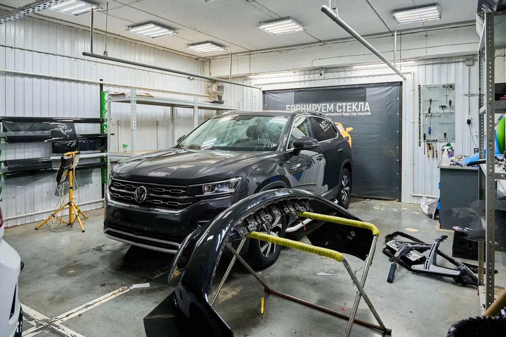
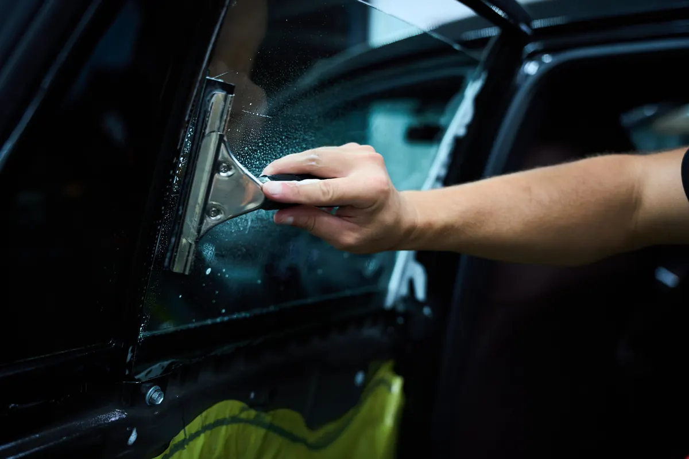
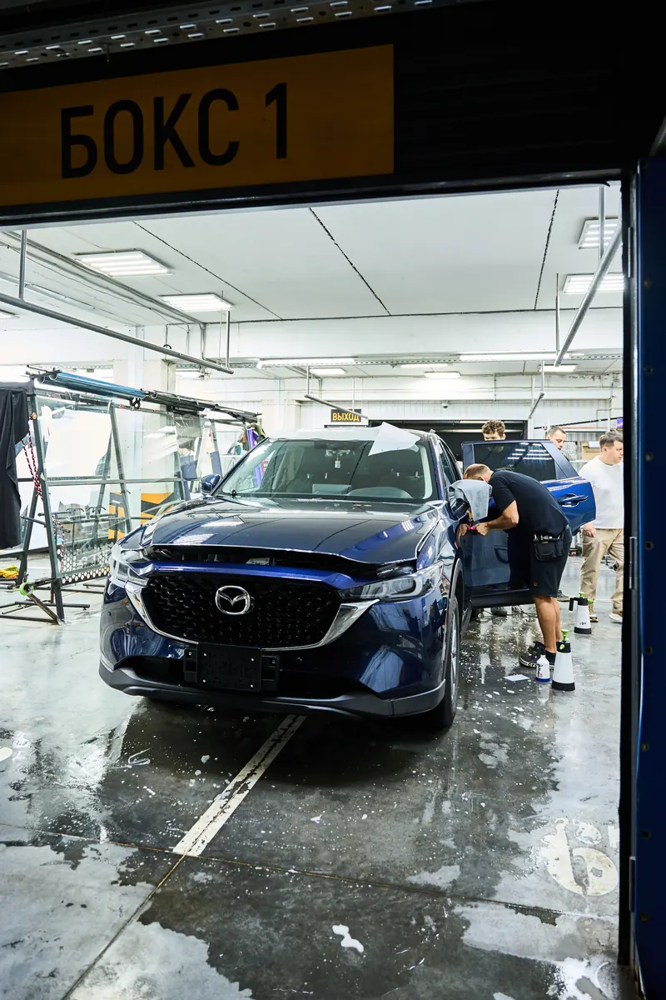

Бронирование лобового стекла в Казани
Прозрачная плёнка берёт удар камня на себя: на стекле не остаётся скола, а если понадобится, меняют только плёнку.
от 20 000 ₽ · около 4 часов · оплата по готовности

Бронирование лобового стекла — это прозрачная защитная плёнка на внешней стороне стекла. Камень из-под колёс попадает в плёнку, она гасит удар, и вместо скола или трещины на стекле остаётся точка на плёнке. Обзор при этом не меняется: плёнка прозрачная. Цена — от 20 000 ₽, работа занимает в среднем 4 часа.
Защита от сколов нужна тем, кто много ездит по трассе за грузовиками, и тем, кто хочет сохранить заводское стекло: замена лобового на машине с камерами и датчиками — дорогая и долгая история.
Какую плёнку ставим на лобовое
Работаем с плёнками для стекла NaFilm WS00 и WS10, NoSkol и Azbuka Wind Protection. Они созданы именно для лобового стекла: прозрачные и ложатся по изгибу стекла.
Какую выбрать, решаем на осмотре: смотрим размер и кривизну стекла, есть ли камеры, датчики дождя и обогрев, где машина ездит чаще — в городе или на трассе.
Атермальная бронеплёнка
Отдельно бывают плёнки, которые ещё и задерживают часть тепла. Про атермальную плёнку на лобовое и нормы светопропускания подробно рассказали в статье.
Кому стоит бронировать лобовое
- Много трассы. На скорости камни летят сильнее, и сколы появляются чаще.
- Новая машина. Заводское стекло стоит ровно и герметично, его выгоднее сохранить, чем потом менять.
- Дорогое стекло. Камеры, датчики, обогрев, проекция на лобовом — замена такого стекла обходится дорого.
- Уже меняли стекло после скола и не хотите повторять.
Когда бронирование уже не поможет
Плёнка защищает целое стекло. Если на нём уже есть трещина или глубокий скол в зоне обзора, сначала стекло ремонтируют или меняют, а потом бронируют. Мелкие следы песка плёнка не уберёт, но и новых не добавит.
Плюсы и минусы бронеплёнки на лобовом
| Плюсы | Минусы |
|---|---|
| Берёт на себя удары камней и песка — стекло остаётся без сколов | Плёнка изнашивается, и со временем её меняют |
| Сохраняет заводское стекло и его герметичность | После ударов на плёнке остаются точечные следы |
| Задерживает ультрафиолет | Щётки стеклоочистителя по плёнке работают иначе, менять их приходится чаще |
| Заменить плёнку проще и дешевле, чем стекло | Стоит дороже обычной тонировки |
Хотите понять, есть ли смысл для вашей машины? Посмотрим стекло и честно скажем.
Сколько стоит бронирование лобового стекла
| Услуга | Цена |
|---|---|
| Бронирование лобового стекла | от 20 000 ₽ |
| Бронирование боковых стёкол | рассчитываем индивидуально |
Цена зависит от размера и кривизны стекла, выбранной плёнки, количества камер и датчиков и от того, нужно ли снимать старую плёнку. Точную сумму называем после осмотра, оплата — по готовности.
Бронирование боковых стёкол и других элементов
Боковые стёкла бронируют реже: камни из-под колёс летят в основном в лобовое. Если хотите защитить и боковые, посмотрим машину и посчитаем стоимость индивидуально. В тот же визит можно защитить фары и глянцевые детали салона — они быстро покрываются царапинами.
Как проходит бронирование
- Осмотр. Проверяем стекло на сколы и трещины, подбираем плёнку.
- Подготовка. Моем и обезжириваем стекло, убираем пыль с кромок.
- Выкройка. Режем плёнку по форме конкретного стекла.
- Оклейка. Наносим плёнку и выгоняем воду, чтобы под ней не осталось пузырей.
- Проверка. Смотрим обзор, работу дворников, датчиков и камер.
В среднем бронирование лобового стекла занимает 4 часа. Пока работаем, присылаем фото этапов в мессенджер.

Уход после оклейки
Первые дни не мойте стекло под высоким давлением и не скребите лёд по плёнке. Щётки лучше поставить новые и менять чаще, чем обычно: так плёнка дольше остаётся прозрачной.
Почему бронируют стекло в «Мустанге»
- Больше 3000 машин прошли через студию, опыт мастеров — от 5 лет.
- Рейтинг 5,0 на Авито по 52 отзывам.
- Плёнки «Азбуки Плёнок» и NaFilm — с ними же работаем по кузову.
- Без предоплаты: платите, когда приняли работу.
- Фотоотчёт каждого этапа в мессенджер.
- Подземная парковка, работаем с 8:30 до 20:30 без выходных.

Вопросы и ответы
Будет ли видно плёнку на стекле?
Плёнка прозрачная, и с водительского места её не замечают. Вблизи можно разглядеть кромку по краю стекла.
Не будет ли хуже видно ночью и в дождь?
Прозрачная плёнка не затемняет стекло. Чтобы ночью не было бликов, важно держать её чистой и вовремя менять щётки.
Будут ли работать датчик дождя и камеры?
Да. Перед оклейкой смотрим, где стоят датчики и камеры, а после работы проверяем, что они срабатывают.
Можно ли бронировать стекло, на котором уже есть скол?
Мелкий скол сначала лучше отремонтировать, иначе под плёнкой он может пойти трещиной. Если трещина уже есть, стекло нужно менять.
Придётся ли менять щётки?
Желательно поставить новые сразу после оклейки и дальше менять чаще: старая щётка с песком быстрее царапает плёнку.
Сколько времени занимает бронирование лобового?
В среднем 4 часа. Машину можно оставить утром и забрать в тот же день.
Сколько служит плёнка на лобовом?
Зависит от пробега и того, сколько машина ездит по трассе. Когда плёнка покрылась следами от камней, её снимают и клеят новую — стекло под ней остаётся целым.
Можно ли потом снять плёнку?
Да. Плёнку снимают, не повреждая стекло.
Запишитесь на бронирование лобового стекла — посмотрим стекло и назовём точную цену.
Запись и контакты
Казань, ул. Аделя Кутуя, 110Д, корп. 4. Ежедневно с 08:30 до 20:30, своя подземная парковка. Телефоны +7 (966) 802-00-10 и +7 (906) 135-00-11 или запись онлайн.
Полезное по теме
Казань, ул. Аделя Кутуя, 110Д, корп. 4 · ежедневно 08:30–20:30 · +7 (966) 802-00-10, +7 (906) 135-00-11 · своя подземная парковка
Другие услуги: